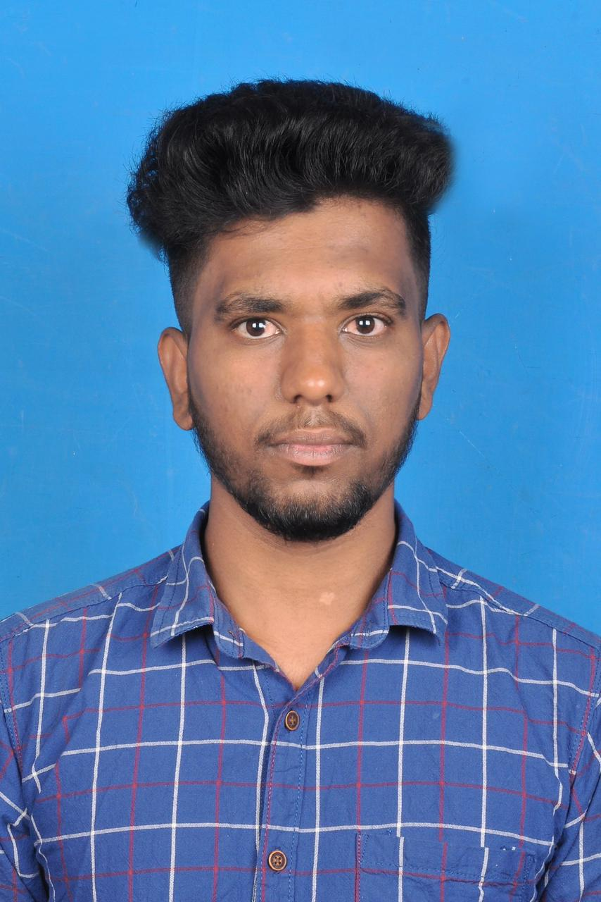

Tamilarasan R
Contact Me
About Me
An enthusiastic fresher with highly inspiring leadership skills,
and an addict in problem solving. I always want to learn and
enhance my skills in new technologies. Flourishing My talent
and harnessing it in the best possible way has always been a
sort of whim for me. a Expert in the implementation of each
step of the project. Working hard to become a smart worker.
Education
- Sri krishna College of Technology,Coimbatore
- Er.Perumal Manimekalai Polytechnic College,Hosur
- St.Anne's Matriculation School,Hosur
Project
- Bank Management System
- Asimple java project that models how a banking app would work
- Users can log in,sign up,check their balance,withdraw and deposit money,modify Password
- Tech Stack : Java,Mysq
- Bus Reservation Console App
- Created a Simple Console for Ticket Booking
- This project contains essential modules like User can book / reserve the ticket
- Teck Stack:Java
Certification
- Java Programming- Great Learning
- Introduction to CyberSecurity- SkillUP
- Programming Essentials in Python
- Cyber Forencis- Great Learning
Skills
Programming Languages: Java, SQL, HTML, Basics of Core Java
Soft Skills: Communication,Collaborative,Team Player
Language Known: English,Tamil,Telugu,kannada